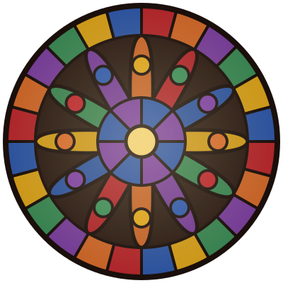

Agustin, Tomas, Descartes, Locke, Hobbes, Adam Smith... Jainkoaren Hiritik merkatu askeraino, mila urte baino gehiagoko bidaia, galderaz galdera. Erakutsi zenbat dakizun eta lortu podioa!
Plataforma-joko bat bakarka jolasteko: zeharkatu Erdi Aroa eta Aro Modernoa gai batetik bestera. Oztopo bakoitzaren aurrean galdera bat erantzun behar duzu; asmatuz gero aurrera, eta huts eginez gero bizitza bat galduko duzu. Hiru bizitza dituzu eta zortzi geldialdiak gainditzea da erronka.
Hiponako Agustinengandik Adam Smithen merkatu askeraino. Sakatu gai bakoitza gakoak ikusteko: gero jokoan galdetuko zaizkizu! Ikasteko: ikastaro interaktiboa eta laburpen bisuala.
Sakatu txartel bat buelta emateko: ideia nagusia eta aipu ospetsu bat ditu atzean.
Maila bat aukeratu eta PINa eta QR kodea proiektatzen ditu.
PINa idatzi edo QRa eskaneatu, ezizena eta abatarra aukeratu.
Zuzen eta azkar erantzuteak puntu gehiago ematen ditu. Bolada luzeek bonusa dute. 🔥